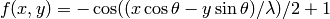

The utilities module is the standard home for shared functions which many modules may use. The spirit of utilities is also to isolate sections of critical code so that unit tests can be used to ensure a minimum of bugginess.
Given an absolute coordinate pair, return the split chunk and subchunk coordinates.
Given an x, y, z triplet, return the index into a 16x128x16 chunk.
More affectionately known as “bit-twiddling.”
Evaluate a rotated 3D sinusoidal wave at a given point, angle, and wavelength.
The function used is:

This function has a handful of useful properties; it has a local minimum at f(0, 0) and oscillates infinitely betwen 0 and 1.
Attempt to read an NBT blob from the file with the given filename.
If the requested file does not exist, then the returned tag will be empty and will be saved to that file when write_file() is called on the tag.
This function can and will make a good effort to create intermediate directories as needed.
XXX should handle corner cases XXX should mmap() when possible XXX should use Twisted’s VFS